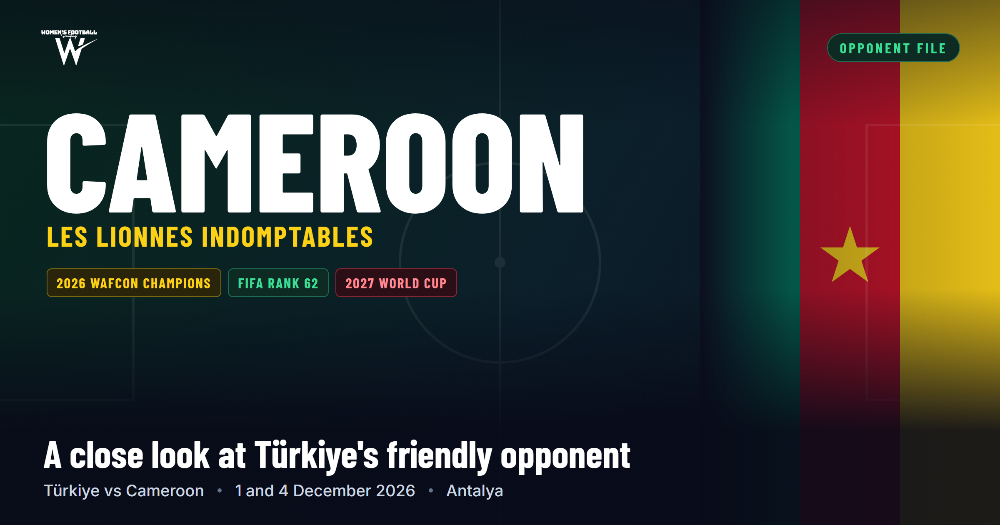

Cameroon Women's National Football Team
62nd in the FIFA rankings, 2026 WAFCON champions and bound for the 2027 FIFA World Cup in Brazil. A close look at the side Türkiye face twice in Antalya on 1 and 4 December.

I wrote this piece to take a closer, deeper look at the Cameroon women's national team: the side that, with an unexpected run, won the Women's Africa Cup of Nations (WAFCON), booked their World Cup ticket and, for the first time in their history, are working with a female head coach.
Türkiye's women's national team, under head coach Necla Güngör Kıragası, play Cameroon in two friendlies on 1 and 4 December 2026 at the Emir Hotels Arslan Zeki Demirci Sports Complex in Antalya. Our players, of course, gathered weeks in advance and have once again started a marathon in which they will be worn down by unnecessary and equally pointless physical loading, pushed past their limits both mentally and physically. But that is not our subject. Let's take a look at Cameroon together…
Profile and History
One of the continent's oldest football schools: a first title after three lost finals.
Cameroon's women's football is one of the continent's most established schools, yet for years it lived in the shadow of Nigeria, Morocco and even South Africa. After losing three finals (2004, 2014, 2016), this long-standing side finally broke the curse in the summer of 2026. Let's start with the key facts:
- Official name
- Cameroon Women's National Football Team
- Nickname
- Les Lionnes Indomptables (The Indomitable Lionesses)
- Federation
- FECAFOOT, Cameroonian Football Federation
- Colours
- Green-Red-Yellow
- Confederation
- CAF, Africa
- Current FIFA ranking
- 62nd (as of 20.10.2026, up from 71st)
- Current CAF ranking
- 3rd (as of 20.10.2026, up from 5th)
- Highest FIFA ranking
- 41st (07.2019)
- Lowest FIFA ranking
- 90th (10.2007)
- Head coach
- Valentine Nguele (since 06.2026)
- Biggest achievements
- 1× WAFCON title ('26), 3× WAFCON runners-up ('04, '14, '16), 2× World Cup round of 16 ('15, '19)
Cameroon in the FIFA rankings
Off the Pitch
A slump, a sacked coach, a last-minute invitation and a trophy in 65 days.
Looking back over Cameroon's last three years, the turnaround reads like the script of a sports documentary:
- 2015 · 2019The golden generation that caught the eye by getting out of the group at the 2015 and 2019 World Cups grew old, and the team went into a sharp decline.
- 2023Knocked out by Portugal in the 2023 World Cup play-off.
- 2024Failed to qualify for the 2024 Paris Olympics.
- 2024Missed the 2024 Africa Cup.
- Oct 2025A 3-1 aggregate defeat to Algeria in qualifying kept them out of the Africa Cup for the second time in a row and put women's football in the country under scrutiny.
- ThenFECAFOOT president Samuel Eto'o sacked head coach Jean-Baptiste Bisseck after this failure.
- InvitationWith their absence from the tournament confirmed, Cameroon were invited to the 2026 WAFCON at the last minute thanks to their FIFA ranking, after CAF decided to expand the tournament from 12 to 16 teams.
- UncertaintyThe team went through months of uncertainty over the head coach's job.
- 12 June 2026With just a month to go before the tournament, the coachless side turned to former national team goalkeeper Valentine Nguele, who had put together a 16-game unbeaten run with FC Ebolowa in the domestic league.
- 65 days laterNguele took charge as the first female head coach in the history of Cameroon's women's national team and, within 65 days, delivered the country's first continental title.
In brief: the backbone of women's football in Cameroon is the top-tier league known as the Guinness Super League. In recent years clubs such as Amazones FAP, Lekié FF and FC Ebolowa have been the driving force in youth development and in exporting players.
FECAFOOT's sponsorship deal for the domestic league and its per-match locker room bonus agreements have partly improved local players' financial conditions. Even so, the turf wars between the Ministry of Sports (MINSEP) and the federation, a familiar feature of Cameroonian football, and the bonus disputes at past tournaments have always kept things lively behind the scenes.
The national team squad is built on physically strong young players developed in this domestic league. Adding professionals who play in France and the USA created a hybrid national team, and that combination brought success.
On the Pitch
From a scattered, individual game to a pragmatic tournament team.
Under Valentine Nguele, Cameroon moved away from their old, disorganised game built on individual improvisation and became an extremely pragmatic tournament team: one that changes system and shape during a game when the opponent calls for it, and attacks and defends according to who it is facing. I'd like to look at the main themes in detail below:
Flexible Shape
Their base templates are the 1-4-3-3 and its defensive variation, the 1-4-2-3-1 (the first 1 is the goalkeeper), but in big games Nguele can switch to a 1-4-5-1 that crowds the midfield or, out of possession, to a diamond-shaped 1-4-4-1-1.
Four templates, one squad
Pick a template and the players slide into their new positions. The shapes are drawn from the description in the piece and carry no names: the squad has been named, but the starting eleven is not known yet.
Base template. Mobile full-backs with a sharp, relatively tall centre-back pair between them.
defence midfield attack
GK goalkeeper · LB/RB left/right back · CB centre-back · DM defensive midfielder · CM central midfielder · AM attacking midfielder · LW/RW left/right winger · ST striker
Defensive Awareness
In the knockout rounds of the 2026 WAFCON they beat continental giants Nigeria 1-0 in the quarter-final, hosts Morocco 3-1 on penalties after a 0-0 draw in normal time in the semi-final, and Malawi 3-0 in the final. Not conceding a single goal in normal time in the knockout rounds is the clearest proof of how compact and disciplined their team defence has become.
Road to the title: 2026 WAFCON
This is where the player profiles come in. Nguele, who prefers mobile and dynamic full-backs, paired them with sharp, relatively tall defenders. To make the defensive discipline complete, she usually put two defensive midfielders in front of that pair. One of these DMs was a mobile battler, the other a mobile dynamo. Time and again, before the ball could get deep into the defence, this duo became the hub of the game as it turned into transition. The hidden defenders were the wingers. Waiting wide, as deep as their own midfield when needed, they effectively worked as wing-backs and could cover the whole flank; when the game turned into a counter-attack, they took up positions like out-and-out wide forwards.
Attacking Awareness
Rather than chasing possession, Cameroon closed off the centre and steered opponents to the flanks, mainly aiming to keep their defensive discipline against technical teams that play through the middle. They managed it most of the time, and opponents were constantly forced out to the touchline. Once they realised it was easier to win the ball in those moments, they made it their job to do it against every team. So much so that they won the ball more often in wide areas than in the centre and launched vertical, very fast counter-attacks through their dynamic central midfielders. Physically, their hardness in duels and their dominance in the air were the biggest threat to teams like Türkiye: technically capable, but prone to falling apart in physical contests, especially in the second half.
Areas to Improve
It is a known fact that they struggle to create in settled attacks against opponents who defend in a deep block. Then again, defending deep against such a strong and mobile team is a thin thread between suicide and a miracle. In the 1-1 draw with Cape Verde in the group stage in particular, Cameroon were the side that, figuratively speaking, kept hitting the post at dozens of turning points in the game, and Cape Verde pocketed a point.
They also tend to pick up cards when tension rises during a game. The head coach is known to warn her players sternly about this and to talk about composure in every team talk.
The last point is a weakness in positional awareness within their game principles. Although the root of it is not building play correctly, we actually see them making mistakes in managing their block. They are neither quick nor deliberate enough in stretching and narrowing the game at the right moment. Still, I'd say they make up for it with their pace.
The Players
Several of the team's key players have links to Türkiye.
There is a group of players who are not far from us at all, and by "us" I mean followers of the Turkish leagues… I suspect this will be the most interesting part of this piece, because several of the team's most important players have Turkish connections. Let's look first at the squad that was named, and then at its key names one by one:
The squad: 27 players
The list Cameroon named for the games on 1 and 4 December (Lionnes Indomptables official account, 24 November 2026); position groups as on the list. Players mentioned in the piece appear under the names used here. The four players marked in yellow play in the Turkish Women's Super League; Marlène Essimi's club, written as "Kayserispor" on the list, is Kayseri Kadın FK in TFF records. Official list ↗
Goalkeepers 3
- Michaely BihinaBenfica · Portugal
- Ange BawouDja Sport · Cameroon
- Cathy BiyaÉclair de Saa · Cameroon
Defenders 8
- Colette NdzanaFenerbahçe · Türkiye
- Maëva NyadjouKansas City Current · USA
- Ousmanou DoudouFC Ebolowa · Cameroon
- Ivana Yakana MakanaLekié FF · Cameroon
- Easther Mayi KithUrawa Red Diamonds · Japan
- Marlène EssimiKayseri Kadın FK · Türkiye
- Alexandra Francy Lesly EkodeckLekié FF · Cameroon
- Brunda Ingrid Ruth BellaGetafe CF · Spain
Midfielders 8
- Charlène Meyong MeneneLekié FF · Cameroon
- Achta Toko NjoyaReal Madrid · Spain
- Monique NgockWashington Spirit · USA
- Geneviève Ngo MbeleckFC Ebolowa · Cameroon
- Ornella BeulouFC Ebolowa · Cameroon
- Fatima KomeBeşiktaş · Türkiye
- Emma Jo-Anne Agbor Tataw CronquistRosengård · Sweden
- Kevine OssolHakkarigücü · Türkiye
Forwards 8
- Naomi EtoDenver Summit · USA
- Grâce MendouaFC Ebolowa · Cameroon
- Michaela AbamAlUla · Saudi Arabia
- Raissa NnangaLekié FF · Cameroon
- Véronique Zang BikoulaRAAL La Louvière · Belgium
- Confidence BuhRoubaix · France
- Aaliyah CadarsiVillarreal · Spain
- Gabrielle Aboudi OnguénéCSKA Moscow · Russia
Cameroon's footprint in the Super League
Marie Ngah
Hakkarigücü, Galatasaray, Fenerbahçe · 4 seasons (2023-24 – 2026-27)
NOT IN THE SQUADFatima Kome
Beşiktaş · 3 seasons (2024-25 – 2026-27)
IN THE SQUADColette Ndzana
Fenerbahçe · 1 season (2026-27)
IN THE SQUADKevine Ossol
Hakkarigücü · 3 seasons (2024-25 – 2026-27)
IN THE SQUADMarlène Essimi
Kayseri Kadın FK · 1 season (2026-27)
IN THE SQUADGeneviève Ngo Mbeleck
Fenerbahçe, Amed Sportif · 2 seasons (2022-23, 2025-26)
IN THE SQUADRose Bella
ALG Spor, Gaziantep Asya, Amed Sportif · 3 seasons (2022-23 – 2024-25)
NOT IN THE SQUADMarie Ngah Manga
Striker / left winger · 24 · Fenerbahçe
Marie is a star Turkish football fans know well. In Türkiye she played first for Hakkarigücü Spor and then Galatasaray, before a short spell in Saudi Arabia. That move didn't work out, and it sent her knocking on Galatasaray's door again. At the start of this season, however, Marie moved to arch-rivals Fenerbahçe on a very good contract. She joined late, because at the time she was busy scoring 5 goals at the 2026 WAFCON. Those 5 goals made her the tournament's top scorer. She scored twice against Malawi in the final and was named in the Team of the Tournament. Her finishing inside the box and her physical strength are very high. In her first month at Fenerbahçe, however, she was played while signs of overtraining were ignored, and she suffered a medium-to-long-term injury. Although the injury was only announced before the Galatasaray game, it was common knowledge that she had been hurt earlier. Marie is not expected to be in the squad for these games.
Last league game: matchweek 4. UEFA Women's Europa Cup: 1 game, 53 min, 2 goals (SoccerDonna).
Super League goals by season (TFF; 2026-27 in yellow, season in progress)
Colette Ndzana
Left-back / left wing-back · 26 · Fenerbahçe
After spells at Reims and Dijon in France, she joined Fenerbahçe in September 2026. She captained the side at the 2026 WAFCON. As well as her defensive toughness, her overlapping runs down the left give the attack width. She can play the flank both vertically and laterally, using the full width of the channel. At times she supports the build-up and takes on the role of a playmaking full-back, but she is mainly positioned as an overlapping wide defender or a balanced wide midfielder. She does, however, suffer serious lapses in concentration and has problems with the timing of her challenges when defending passing combinations. Against her, rather than going 1v1, it pays to play away from her, thinking and moving the ball quickly.
UEFA Women's Europa Cup: 4 games, 3 starts, 241 min (SoccerDonna).
Monique Ngock
Central midfielder / defensive midfielder · 22 · Washington Spirit
Named Player of the Tournament (MVP) at the 2026 WAFCON, Monique played for Reims and Fleury in France before joining NWSL heavyweights Washington Spirit in July 2026. As the brain in front of the defence, she leads the team in the central channel: zonal defending and ball-winning out of possession; in possession, managing passing combinations at an adequate level, directing play and starting transitions. Her height is a disadvantage and she is not good enough in the air. With her technical ability still underdeveloped, Monique brings a more dynamic game.
Washington Spirit have played 9 games since she was first named in their squad: in the squad for 9, 3 starts, 5 substitute appearances, 287 minutes in total.
Naomi Eto
Number 10 / second striker · 22 · Denver Summit
Named Cameroon's Women's Player of the Year in 2025, the young star introduced herself to the women's football world by playing for 4 different teams in 2 years. Nao joined Guingamp in February 2025 and, over an 8-game spell, became one of the most talked-about players in the league; once the season ended she received dozens of offers. The most serious came from PSG, with a three-year deal. Nao said yes and was first loaned to Sassuolo, then in September 2026 sold to Summit for an undisclosed fee because of PSG's overcrowded squad. Often confused with Samuel Eto'o because of her surname, Nao both collects second balls and loves to play forward. But having played fewer than 2,000 minutes in total over the last two years, she has a style that catches the eye and wins praise at national team level rather than at club level. With her height and long legs giving her a physical edge over opponents, she is one of the biggest scoring threats.
Denver Summit have played 4 games since she was first named in their squad: in the squad for 3, on as a substitute 2 times, 4 minutes in total.
Fatima Kome
Central midfielder / defensive midfielder · 24 · Beşiktaş
One of the standout midfield dynamos in our league, Fatima has attracted interest from European clubs since the day she arrived. In the Cameroon national team she is mostly used as the first choice in the rotation, a player who can come in for any midfielder losing energy. With her long legs, determined character and the timing of her challenges, she can lead in man-marking, and she also brings dynamism through her running distance, acceleration over the first metres and sustained speed. As good on the ground as she is in the air, she stands out as a player who stays in the game even if she sometimes loses positional awareness.
Started all 9 league games she has played. Last season (2025-26): 24 apps, 2,080 min, 6 goals.
Leaders, goalkeepers and the rest
Like Marie Ngah Manga, 33-year-old striker Ajara Nchout Njoya, formerly of Atlético Madrid and Inter, who returned to her home country in October, has not been called up. That settles who will lead the team: 37-year-old living legend Gabrielle Aboudi Onguéné (CSKA Moscow)… Gabrielle is a famous Cameroonian who remains the spiritual leader of the dressing room. In goal there is a fierce battle for the shirt between Michaely Bihina (Benfica), Ange Bawou (Dja Sport) and young Cathy Biya (Éclair de Saa). Geneviève Ngo Mbeleck (FC Ebolowa), a surprise call-up who has also played in Türkiye, together with Kevine Ossol, currently at Hakkarigücü, and Marlène Essimi, currently at Kayseri Kadın FK, are the names invited into the squad rotation. While Rose Bella, previously a regular in the squad, has not been called up this time, the other names who have been called up and deserve attention are:
Easther Mayi Kith (Urawa Red Diamonds), Maëva Nyadjou (Kansas City Current), Aaliyah Cadarsi (Villarreal), Michaela Abam (AlUla) and Achta Toko Njoya (Real Madrid).
Clubs as given by the author; SoccerDonna for Bihina, Bawou, Mayi Kith and Nyadjou (20 November 2026); clubs for Mbeleck, Biya, Cadarsi, Abam and Toko Njoya from the squad list. Figures for Mbeleck, Ossol, Essimi and Rose Bella from TFF match reports (this season: after matchweek 11). "Not in the squad" refers to the list named on 24 November.
5 Key Themes
The storylines that will shape the two games in Antalya.
- 1
Familiar Faces
Marie Ngah Manga and Colette Ndzana know the players of the Turkish Super League well, Fatima Kome plays alongside members of the national team's back line, and Rose and Genevieve have their own view of Türkiye: this can be read as a meeting of two sides who know each other.
- 2
From Elimination to Champions
On one side, the confidence of a team that was knocked out by Algeria a year ago, got into the tournament through an expanded field and reached the top of Africa with a female coach of two months; on the other, the rotated squad of a Turkish national team low on morale and dreaming of a World Cup…
- 3
Physical Battle and Transition Defence
Türkiye, who will want to chase transitions whenever Cameroon lose the ball in settled play in these two games, could be beaten with their own weapon. Their opponents may well play the switch from defence to attack better than Türkiye. The quick counter-attacking threat of the Monique Ngock–Naomi Eto link could turn things around.
- 4
A 2027 World Cup Dress Rehearsal
Cameroon are not coming to Antalya on holiday but to test their core before Brazil 2027; that makes it a unique chance for Türkiye to measure themselves against a genuine World Cup side. Likewise, a Türkiye side that failed to qualify will want to put on a performance that proves they should have been there.
- 5
Building the Future
Türkiye's squad has been announced. Cameroon named their 27-player squad on 24 November. Türkiye have called up 10 young players who could win their first senior cap: Yaren Ersen from Dudullu, Sude Yolcu from Sultanbeyli, Rabia Küçük from Trabzonspor, Mesude Alayont from Fenerbahçe, Miray Ayhan from Stabæk, Nihal Saraç from Beşiktaş, Meryem Sevent from Amed Sportif, Ela Demirbaş from Eintracht Frankfurt, Sena Yavuz from Viktoria 1889 and Sude Öztaş from West Ham… The other important detail announced is that Arzu Karabulut will bid farewell to the national team with these games.
The 10 new names in Türkiye's camp
The ten players named in the piece, with the site's data. Super League figures from TFF official match reports (2026-27, after matchweek 11); First League figures are from last season; players abroad from SoccerDonna match reports.
Super League · TFF, 2026-27 (after matchweek 11)
- Sude YolcuSultanbeyli Gücü · Goalkeeper · age 236 apps · 6 starts · 540 min · 0 goals
- Rabia KüçükTrabzonspor · Left-back · age 239 apps · 9 starts · 688 min · 0 goals
- Mesude AlayontFenerbahçe · Left wing-back · age 237 apps · 4 starts · 362 min · 3 goals
- Nihal SaraçBeşiktaş · Defensive midfielder · age 209 apps · 6 starts · 572 min · 1 goal
- Meryem SeventAmed Sportif · Defensive midfielder · age 2011 apps · 9 starts · 800 min · 1 goal
First League · TFF, last season (2025-26)
- Yaren ErsenDudullu14 apps · 13 starts · 1,215 min · 9 goals
Abroad · SoccerDonna match reports, since first named in the club's squad
- Miray AyhanStabæk · Right-back · age 19Toppserien: on the bench for 4 games
- Sude ÖztaşWest Ham United · Centre-forward · age 18WSL: on the bench for 2 games
- Ela DemirbaşEintracht FrankfurtNo match records in the site's data
- Sena YavuzViktoria 1889 BerlinNo match records in the site's data
Text: WFS Analysis Desk. The team profile, WAFCON results, formation templates and player assessments are the author's. Figures in the boxes come from the site's database: TFF official match reports for the Super League and First League (2026-27 matchweek 11, 20 November 2026; First League 2025-26) and SoccerDonna match reports for players abroad and European cup games (20 November 2026). Scout role and overall grade are our scouting team's assessment; the scale runs from A+ (highest) through AA, AB, BB, BC, CC, CD, DD, DE and EE to FF (lowest). Squad list: the 27-player list published on the official account of Cameroon's women's national team on 24 November 2026. This is an English translation of the original Turkish article.
More files